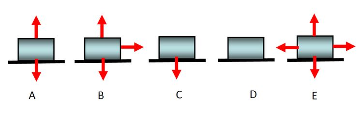

Problem 3: Drawing Free-body Diagrams [Solution]
Now, the block moves with a constant velocity to the right on a surface that has friction. Which of the following most closely resembles the correct freebody diagram for all the forces acting on the block?
B
C
D
E
Answer: E
Explanation: Although the box is moving, it is moving at a constant velocity, meaning that the net force experienced by the box is zero (Fnet = ma = 0). The normal force on an object always points in the direction perpendicular to the surface touching the object (in this case, up). As there is no vertical acceleration in the example above, the normal force exactly cancels the force of gravity pointing down. Since friction is present and pointing left (opposite the direction of motion), then there must be an applied force to the right that exactly cancels the force of friction in order for the box to move at constant velocity to the right.